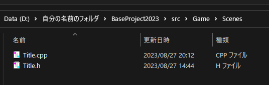

シーンはどのようにつくるの?
1. Gameフォルダの中にScenesというフォルダを作成しましょう。2. その中に Title.cpp / Title.h などの名前のファイルを作成します。

3. Title.cpp/ Title.h は以下の内容にします。4. プロジェクトをオープンします(@open.batを実行)
5. BP実行での初期シーンにするには、「 任意のシーンを実行 」に沿って、書かれているTutoiral_01の所を、Titleに変更して、実行してください
※あくまで例は「Title」というシーンですが、
その名前を「Gaming」「SelectCharacter」「GameOver」などにするだけで異なるシーンが作れます
また、例では「自分の名前のフォルダ」となっていますが、
日本語ではない自分の名前のフォルダに入れてください。BPではフォルダ名に日本語は使えません。
Title.h
#include <System/Scene.h>
namespace MyGame //< ※自分の名前のゲーム名にしましょう
{
//! @brief タイトルシーン
class Title : public Scene::Base
{
public:
//! シーンとして認識する (これでAltメニューで表示できます)
BP_CLASS_TYPE( Title, Scene::Base );
//! @brief 初期化
//! @return 初期化済み
bool Init() override;
//! @brief 更新
void Update() override;
//! @brief 描画
void Draw() override;
//! @brief GUI表示
void GUI() override;
private:
// 必要であれば変数をここに追加する
};
}Title.cpp
#include "Title.h"
namespace MyGame //< ※自分の名前のゲーム名にしましょう
{
//! @brief 初期化
//! @return 初期化済み
bool Title::Init()
{
__super::Init();
// 最初に1回動作する
// ただし trueを返さなければ Initに何回も来る
// trueにしない限り、updateは以降は動作しません。
return true;
}
//! @brief 更新
void Title::Update()
{
__super::Update();
// 毎フレーム動作する
}
//! @brief 描画
void Title::Draw()
{
__super::Draw();
}
//! @brief GUI表示
void Title::GUI()
{
__super::GUI();
}
// ALT-Menuで表示される名前
BP_CLASS_IMPL( Title, u8"MyGameタイトルシーン" );
}